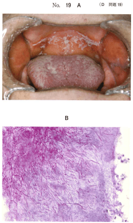
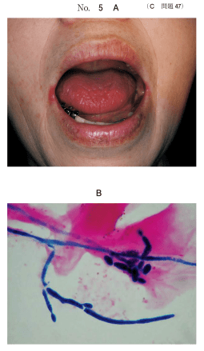
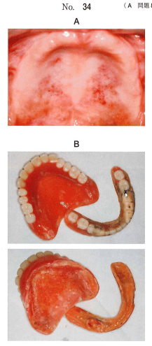
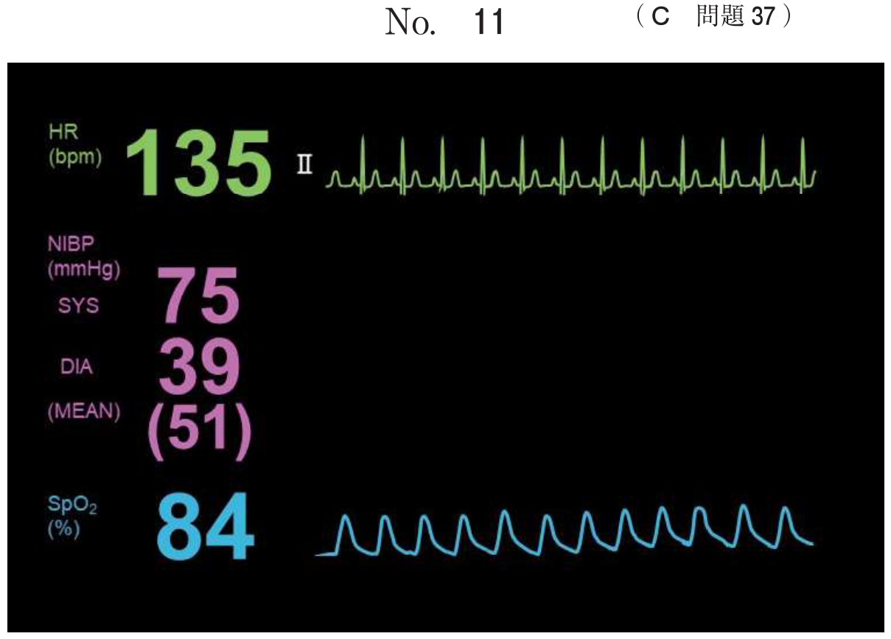
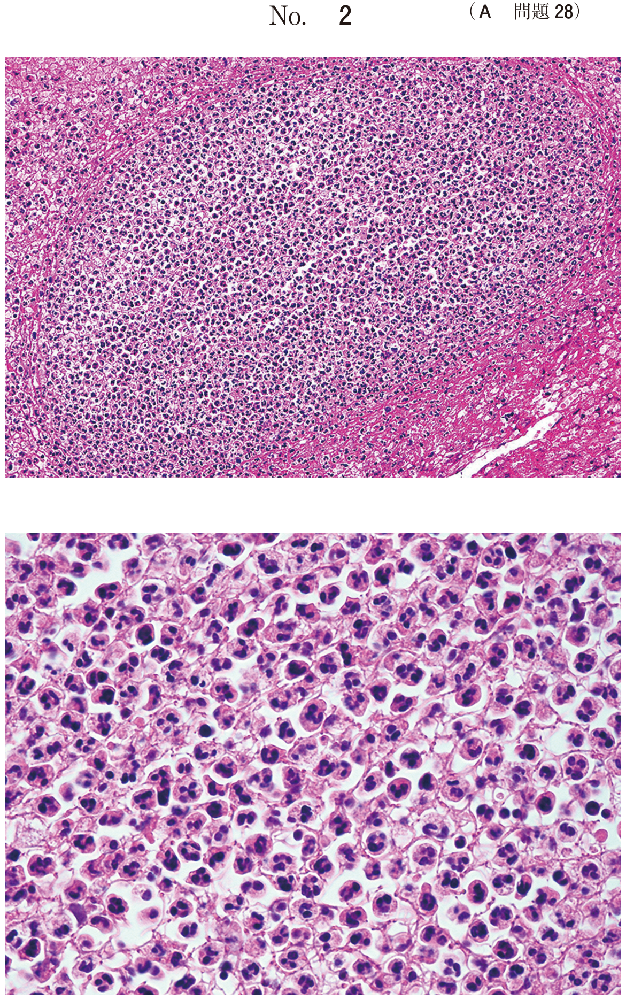
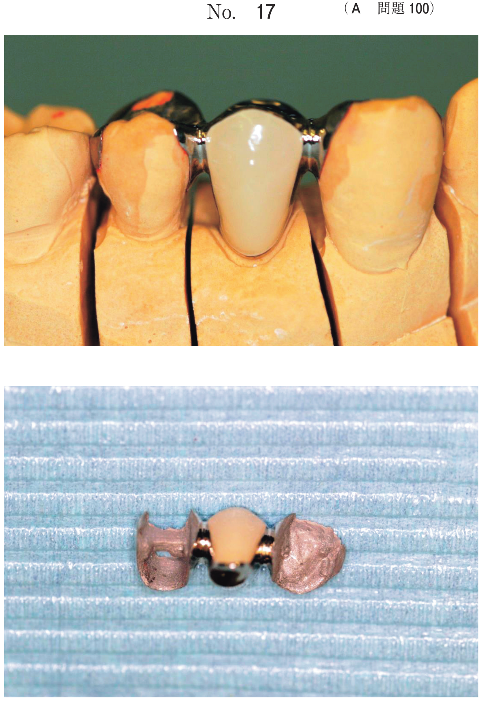

真菌感染症
1. 口腔カンジダ症
原因菌と発症機序
口腔に常在する真菌であるCandida属の感染による。C. albicansが主体であるが、近年はC. glabrata、C. tropicalis、C. kruseiなどのnon-albicans属も増加している。
成人口腔の30〜50%で菌が検出されるが、何らかの症状を示す場合に「口腔カンジダ症」と診断される。日和見感染症の一つである。
発症の誘因
| 分類 | 誘因 |
|---|---|
| 局所的要因 | 義歯の不潔・不適合、唾液分泌減少、口腔乾燥 |
| 全身的要因 | 糖尿病、免疫低下、抗菌薬長期投与（菌交代現象）、副腎皮質ステロイド薬、抗がん薬、免疫抑制剤 |
| 年齢 | 高齢者（特に寝たきり）、新生児 |
臨床分類
| 分類 | 臨床型 | 特徴 |
|---|---|---|
| 急性型 | 偽膜性カンジダ症 | 白色の偽膜（ガーゼで拭うと剥離→びらん面、易出血性） |
| 萎縮性（紅斑性）カンジダ症 | 粘膜の紅斑が主体。白色偽膜なし。抗菌薬使用後に生じやすい | |
| 慢性型 | 肥厚性カンジダ症 | 白色被苔は剥離困難。上皮の過形成と角化亢進。白板症との鑑別が必要 |
| 萎縮性カンジダ症（義歯性口内炎） | 義歯床下粘膜の紅斑が特徴。義歯の不潔が原因 |
- 偽膜性：ガーゼで拭うと剥離できる（その下にびらん面）
- 肥厚性：剥離困難（上皮の角化亢進のため）→ 白板症との鑑別が必要
- 萎縮性：白色偽膜なし。紅斑が主体
診断
- 臨床診断：白斑やびらんの鑑別
- 培養検査：カンジダ菌の同定
- 塗抹標本：PAS染色で菌糸（仮性菌糸）と胞子を確認
- 病理組織学的検査：カンジダ菌を検出。カンジダの血清中抗体の有無の検索も一助
2. カンジダ症の治療
治療の原則
- まず基礎疾患の治療と全身状態の改善
- 口腔内を清潔にする（義歯の清掃含む）
- 局所および全身抗真菌薬の投与
抗真菌薬
| 薬剤 | 分類 | 剤形 | 特徴 |
|---|---|---|---|
| ミコナゾール | アゾール系 | ゲル（フロリードゲル） | 局所使用が一般的。口腔カンジダ症の第一選択 |
| アムホテリシンB | ポリエン系 | シロップ、注射 | 広い抗真菌スペクトル。重症例に使用 |
| イトラコナゾール | アゾール系 | 内用液、カプセル | 全身投与。深在性真菌症にも有効 |
| フルコナゾール | アゾール系 | カプセル、注射 | 重症例、全身性カンジダ症 |
ミコナゾールはワルファリンとの相互作用（抗凝固作用増強）に注意。
78歳の女性。口の中の疼痛を主訴として来院した。2か月前から口の中がピリピリするという。1年前から寝たきりで介護施設に入所している。初診時の口腔内写真（別冊No.19A）と口腔粘膜からの剥離物のPAS染色塗抹標本像（別冊No.19B）を別に示す。
有効な薬物はどれか。1つ選べ。

b ミコナゾール
c シスプラチン
d デキサメタゾン
e アモキシシリン水和物
【解説】高齢・寝たきり＋口腔内疼痛＋PAS染色で菌糸確認 → 口腔カンジダ症。治療薬はミコナゾール（抗真菌薬）。アシクロビルは抗ウイルス薬、デキサメタゾンはステロイド（カンジダ症を悪化させる）。
70歳の女性。口角の痛みを主訴として来院した。食事中に痛みが増悪するという。初診時の口腔内写真（別冊No.5A）と細胞診の染色像（別冊No.5B）とを別に示す。
有効な薬剤はどれか。1つ選べ。

b アシクロビル
c ビタミンB2製剤
d ミコナゾール硫酸塩
e アモキシシリン水和物
【解説】高齢者の口角炎＋細胞診でカンジダ菌確認 → カンジダ性口角炎。治療薬はミコナゾール。ビタミンB2欠乏でも口角炎は生じるが、細胞診で真菌が確認されている点がポイント。
82歳の女性。摂食時の疼痛を主訴として訪問歯科診療の依頼があった。脳梗塞の既往があり、ワルファリンカリウムを服用している。口腔清掃に介助が必要である。初診時の口腔内写真（別冊No.34A）と使用中の義歯の写真（別冊No.34B)を別に示す。
家族への義歯の清掃指導とともに投与すべき薬物はどれか。1つ選べ。

b アムホテリシンB
c アセトアミノフェン
d ミコナゾール硝酸塩
e セファゾリンナトリウム
【解説】高齢＋要介護＋義歯不潔＋口腔内病変 → 義歯性カンジダ症。ワルファリン服用中のためミコナゾールは禁忌（ワルファリンの抗凝固作用を増強し出血リスク増大）。アムホテリシンBはワルファリンとの相互作用がなく、この症例では適切。
3. 義歯性カンジダ症（義歯性口内炎）
病態
慢性萎縮性カンジダ症の代表的な臨床像。義歯床下粘膜の紅斑を特徴とし、不潔な義歯の長期装着が原因となる。白色偽膜は認めないことが多い。
対応の順序
- 1. まず義歯の清掃指導が最優先（原因除去）
- 2. 義歯洗浄剤による義歯の消毒
- 3. 必要に応じて抗真菌薬の投与
- 4. 義歯の適合不良があれば修理・再製
80歳の女性。2年ぶりに上顎残根上全部床義歯装着後の定期検診で来院した。７」付近の粘膜の口腔内写真（別冊No.22A）、ガーゼで粘膜を拭った後の口腔内写真（別冊No.22B）及び使用中の義歯の写真（別冊No.22C）を別に示す。
最初に行う対応はどれか。1つ選べ。


b 経過観察
c 抗菌薬投与
d 義歯の清掃指導
e 副腎皮質ステロイド軟膏の塗布
【解説】義歯装着高齢者の粘膜白色病変で、ガーゼで拭うと剥離 → 偽膜性カンジダ症。最初に行うべきは義歯の清掃指導（原因除去）。ステロイド軟膏はカンジダ症を悪化させる。抗菌薬は細菌感染に対するもので無効。
70歳の男性。口腔内の灼熱感を主訴として来院した。2か月前から口蓋粘膜の違和感を自覚しているという。3年前に作製した上顎義歯を現在も装着している。
初診時の口腔内写真（別冊No.6）を別に示す。
考えられる疾患はどれか。1つ選べ。

b 類天疱瘡
c 口腔扁平苔癬
d アフタ性口内炎
e 口腔カンジダ症
【解説】高齢者＋義歯装着＋口蓋粘膜の灼熱感 → 義歯性カンジダ症（慢性萎縮性カンジダ症）。義歯床下粘膜の発赤・灼熱感が特徴。白板症は白色病変、類天疱瘡は水疱形成、扁平苔癬はレース状白色病変。
4. カンジダ性口角炎
病態
口角部のびらん・亀裂にカンジダが感染して生じる。高齢者に多く、咬合高径の低下による口角部の唾液貯留が原因の一つ。義歯不適合や口腔乾燥も誘因となる。
- 口角部の発赤、びらん、亀裂、痂皮形成
- 開口時や食事中に疼痛が増悪
- 治療：抗真菌薬（ミコナゾール等）の局所塗布＋義歯の咬合高径の回復
高齢者の口角びらんに関与するのはどれか。1つ選べ。
b 慢性耳下腺炎
c 口腔カンジダ症
d ヘルパンギーナ
e 全身性エリテマトーデス
【解説】高齢者の口角びらん → カンジダ性口角炎。Quincke浮腫は血管性浮腫で口唇腫脹、ヘルパンギーナは小児の軟口蓋の水疱、SLEは蝶形紅斑が特徴。
5. 萎縮性カンジダ症の特徴
萎縮性カンジダ症について正しいのはどれか。2つ選べ。
b 病変は角質層にとどまる。
c 清掃不良の義歯が原因となる。
d 擦過によって病変を除去できる。
e 副腎皮質ステロイドによって改善する。
【解説】萎縮性カンジダ症は義歯性口内炎として出現し、口角炎を併発する（a正しい）。清掃不良の義歯が原因（c正しい）。偽膜がないため擦過で除去できない（dは偽膜性の特徴）。ステロイドはカンジダ症を悪化させる（e誤り）。角質層にとどまるのはカンジダ症一般の特徴だが、萎縮性では上皮の菲薄化が主体（b誤り）。
6. 正中菱形舌炎とカンジダ
正中菱形舌炎（median rhomboid glossitis）
舌背の中央部、分界溝の前方に境界明瞭な楕円形の赤みを帯びた隆起と陥起を認める病変。かつては発生異常と考えられていたが、現在はカンジダの関与が考えられている。
- 舌乳頭の消失による平滑な赤色病変
- 自覚症状は乏しいことが多い
- 治療：カンジダが関与する場合は抗真菌薬
55歳の男性。舌背後方の接触痛を主訴として来院した。口腔内写真（別冊No.21）を別に示す。
この病変の原因の1つとして考えられるのはどれか。1つ選べ。

b カンジダ
c マイコプラズマ
d 単純ヘルペスウイルス
e ヒトパピローマウイルス
【解説】舌背後方の病変 → 正中菱形舌炎。カンジダの関与が考えられている。放線菌は顎放線菌症、マイコプラズマは肺炎、HPVは乳頭腫の原因。
7. 口腔カンジダ症のまとめ
臨床型と鑑別のポイント
| 臨床型 | 外観 | 擦過での剥離 | 好発状況 |
|---|---|---|---|
| 急性偽膜性 | 白色偽膜 | 可能（下にびらん面） | 抗菌薬使用後、免疫低下 |
| 急性萎縮性（紅斑性） | 粘膜の紅斑 | 偽膜なし | 抗菌薬使用後（菌交代現象） |
| 慢性肥厚性 | 白色被苔（角化亢進） | 困難 | 頬粘膜、白板症との鑑別要 |
| 慢性萎縮性（義歯性） | 義歯床下の紅斑 | 偽膜なし | 義歯不潔、高齢者 |
治療薬選択の注意点
- ミコナゾールはワルファリンの作用を増強（CYP2C9阻害）→ 出血リスク増大
- ワルファリン服用中はアムホテリシンBを選択